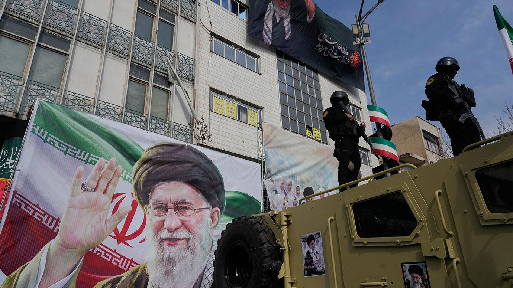

Iran's new supreme leader vows to block
Strait of Hormuz in first statement

published:MARCH 9 2026
Maatla Francis
Iran will continue blocking the Strait of Hormuz, the world's busiest oil shipping channel, according to a statement attributed to Iran's new Supreme Leader Mojtaba Khamenei. His message was broadcast on Iranian state TV, but Khamenei did not appear in person. His message was instead read out by a newsreader. Iran would "avenge the blood" of Iranians killed in the war with the US and Israel, Khamenei said in the statement, which also warned neighbouring countries to stop hosting US bases. He was named supreme leader on 8 March after his father, Ayatollah Ali Khamenei, was killed on the first day of the war. Mojtaba Khamenei lost his wife and a son in the US-Israeli strike on the supreme leader's compound that killed his father. His mother was also reportedly killed in the attack, though one Iranian outlet has since said she is alive. It has been reported by the Reuters news agency, citing an unnamed Iranian official, that Khamenei was "lightly injured", but there have been no details. He has not been seen in public and there have been no photographs or videos of him since becoming supreme leader. Iran's state TV news channel has referred to him as a "veteran of the Ramadan war", without any further confirmation on whether he was injured. In the first public message attributed to him, Khamenei said Iran should use the "lever of blocking the Strait of Hormuz" as the channel is an area where "the enemy is highly vulnerable".Iran would continue targeting US bases in the region, Khamenei said in his statement. Tehran had a policy of "friendship" with neighbouring countries, but he warned them to close their American bases. "We share land or maritime borders with 15 neighbouring countries and have always sought warm and constructive relations with all of them," he said. "These countries must clarify their stance toward the aggressors against our homeland and the killers of our people." "I advise them to close those bases as soon as possible.